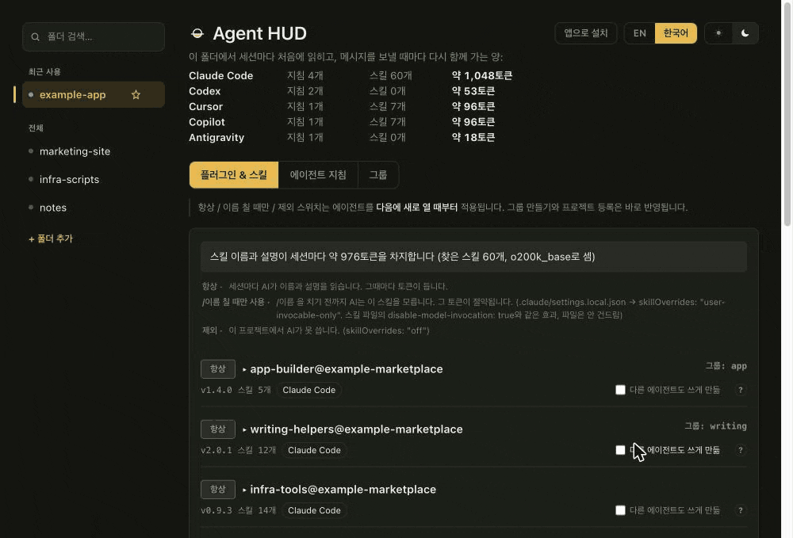
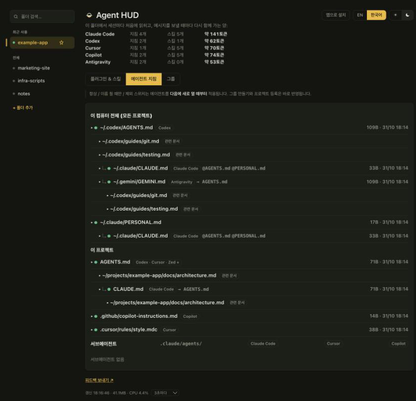

프로젝트별로 스킬과
플러그인을 관리합니다.
ON/OFF 스위치는 Claude Code 설정을 바꿉니다.
지금은 macOS만 지원
설치가 끝나면 Launchpad에서 Agent HUD를 여세요. 브라우저에 대시보드(127.0.0.1:41717)가 열립니다.

코딩 에이전트는 세션을 시작할 때
읽을 수 있는 스킬의 이름과 설명을 불러옵니다.
쓰지 않는 스킬 설명까지 불러오면 입력 토큰이 낭비됩니다.
예를 들어 앱 개발에 쓰지 않는 글쓰기 스킬도 함께 불러올 수 있습니다.
스킬 60개 · 18,938자 · 추정 5,000~9,000토큰
스킬 6개만 쓰는 프로젝트도 60개를 불러올 수 있습니다.
쓰지 않는 스킬 설명도 세션 컨텍스트에 포함됩니다.
개발자의 컴퓨터에서 스킬 60개의 이름과 설명을 합쳐 18,938자를 측정했습니다. 5,000~9,000토큰은 이 글자 수로 추정한 범위이며, 실제 토큰 수는 사용하는 토크나이저에 따라 달라집니다. 대시보드에는 선택한 프로젝트가 불러오는 스킬 수가 표시됩니다.
같이 쓰는 스킬과 플러그인을 그룹으로 묶어 프로젝트에 적용합니다.
플러그인은 스킬·커맨드·훅을 묶어 설치하는 단위입니다. 그룹은 같이 쓰는 플러그인과 스킬의 목록입니다. 그룹을 적용하면 선택한 프로젝트에 스킬 링크를 만들고, 그룹 밖의 플러그인과 플러그인 밖 스킬은 Claude Code에서 끕니다. 설정은 해당 프로젝트 폴더에 저장됩니다. 플러그인 변경은 다음 세션부터 적용됩니다.
같은 스킬 폴더를 여러 에이전트에 연결합니다.
에이전트마다 스킬을 찾는 폴더가 다릅니다. 스킬의 체크박스를 선택하면 프로젝트의 .claude/skills/와 .agents/skills/에 원본 폴더를 가리키는 링크를 만듭니다. 수정은 원본 한 곳에서 합니다. 링크를 통한 읽기는 Claude Code, Codex, Gemini CLI, Copilot, Antigravity에서 확인했으며, Cursor는 아직 확인하지 않았습니다.
같은 저장소의 worktree에 스킬을 공유합니다.
플러그인 & 스킬에서 같은 저장소의 worktree를 펼치고, 스킬과 작업 폴더를 선택한 뒤 경로를 미리 확인합니다. 없는 스킬 링크만 추가하며 기존 폴더와 링크는 유지합니다. 플러그인 설정·훅·MCP 구성은 복사하지 않습니다. 새 worktree에 적용할 기본 구성을 저장할 수도 있습니다. HUD 실행 중에는 15초마다 확인하므로, 에이전트를 시작하기 전에 링크가 필요하면 agent-hud worktrees apply를 실행합니다. 자동 적용 제외와 세션 반영 방법은 README에 있습니다.
프로젝트의 지침 파일과 수정 시각을 확인합니다.
CLAUDE.md, AGENTS.md, .cursor/rules/처럼 에이전트마다 다른 지침 파일을 찾아 크기와 수정 시각을 보여줍니다. 수정 시각을 비교해 함께 갱신할 파일을 확인할 수 있습니다.

자주 묻는 질문
왜 macOS만 지원하나요?
설치 스크립트와 앱은 macOS용입니다. Linux에서는 server.py를 직접 실행하고 systemd --user 같은 서비스 관리 도구를 별도로 설정해야 합니다. Finder 폴더 선택 같은 macOS 기능은 사용할 수 없습니다. Windows는 아직 지원하지 않습니다(#1).
내 컴퓨터에서 무엇이 바뀌나요?
ON/OFF 스위치는 선택한 프로젝트의 .claude/settings.local.json을 수정합니다. 스킬 연결과 그룹 적용은 프로젝트 스킬 폴더의 링크도 바꿉니다. worktree 공유는 선택한 작업 폴더에 없는 링크만 추가합니다. 지침 파일은 읽어서 보여주며 수정하지 않습니다.
되돌리거나 지우려면요?
그룹 적용을 해제하면 그룹이 관리하는 스킬 링크가 삭제됩니다. enabledPlugins와 skillOverrides 설정은 남습니다. 이 설정까지 되돌리려면 프로젝트의 .claude/settings.local.json에서 Agent HUD로 바꾼 항목을 확인해 제거합니다. worktree 자동 적용은 별도로 끄며, 이미 만든 링크는 유지됩니다.
Homebrew 설치본은 brew services stop agent-hud로 중지합니다. 앱도 설치했다면 brew uninstall --cask agent-hud-app으로 앱을 지운 뒤, brew uninstall agent-hud로 명령과 서버를 지웁니다. 설치 스크립트로 설치했다면 launchctl bootout gui/$(id -u)/com.agent-hud로 중지하고 ~/Library/LaunchAgents/com.agent-hud.plist를 지웁니다. 그룹과 프로젝트 목록의 저장 위치는 설치 방식과 AGENT_HUD_HOME 설정에 따라 다릅니다. 데이터 위치 설명을 확인하세요.
다른 에이전트도 따로 설정해야 하나요?
프로젝트 등록은 사용하는 에이전트와 관계없이 할 수 있습니다. ON/OFF 스위치는 Claude Code 설정만 수정합니다. 다른 에이전트에는 스킬 연결 체크박스로 원본 폴더를 연결합니다. 그룹을 바꾸면 프로젝트의 링크도 추가되거나 삭제되므로, 다른 에이전트가 찾는 스킬 목록도 달라질 수 있습니다. 기존 세션에 반영됐는지는 해당 에이전트의 스킬 목록에서 확인하세요.
단일 파이썬 파일에 표준 라이브러리로 구성되어 있으며, 데이터는 로컬에서만 사용됩니다. 스스로 인터넷에 접속하는 건 하루에 한 번 GitHub Releases에서 새 버전을 확인할 때뿐입니다. Homebrew로 설치하고 지금 업데이트를 누르면 Homebrew가 새 버전을 내려받습니다. 토큰 수 세기는 선택입니다. 설정 명령을 실행하면 tiktoken 패키지와 공개 어휘 파일 하나를 도구 자신의 폴더에 한 번 내려받고, 그 뒤로는 컴퓨터 안에서 오프라인으로 셉니다.